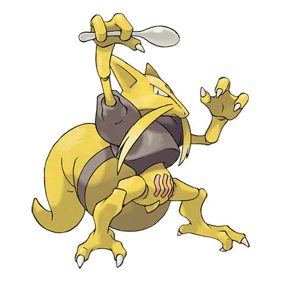
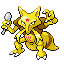

Назад
Кадабра

Кадабра — Покемон 1 поколения под номером 64 в Покедекс. Обитает он в регионе Канто и относится к Психическому типу. При головной боли Кадабра излучает своеобразную альфа-волну. Стать тренером этого Покемона могут только люди с закалёнными нервами.
Тип:
Психический
Эволюция

# 064 Кадабра
=>
# 065 Алаказам